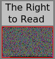
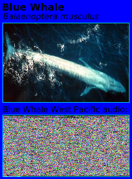
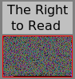
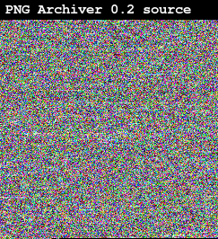

and gzipped (more colorful than plain ASCII):

The original text file can be found here: right-to-read.txt (13KB).
Embedded in the image below is the audio recording of a blue whale. It
was produced using the PNG Archiver. The audio sample can also be
extracted using the PNG Archiver.

PNG Archiver is a library (pngdat) and
command line tool (pngarch) for storing data inside a PNG image. The inspiration for this
idea comes from Sean Howard's Gameplay Mechanics. This idea is from Mechanic #12:
The idea is that data can be embedded into image files (similar to a bar-code, but not having to pander to a single horizontal line scanner) in order to make sharing of data easier.
Images are the easiest file format to share on the Internet, and anywhere where you can share a file, you can always share an image. With the PNG Archiver, you can store any data you want in the image. A built-in checksum checks the data integrity when extracting the data from an image.
For example, here is Richard Stallman's Right to
Read:

and gzipped (more colorful than plain ASCII):
The original text file can be found here:
right-to-read.txt (13KB).
The built-in PNG compression doesn't do much for this non-image data. This is why you should compress data before archiving it in a PNG. This will also make the image dimensions smaller.
A decent amount of data can be stored in an image. 1.4MB can be stored in an 800x600 8-bit depth image. If you want to push the limits, you can store about 4.5MB in a 1024x768 16-bit depth image (a typical desktop wallpaper). That is enough to store several minutes of audio recording.
This tool has the word "archive" in its name. However, this
technically is not an archiving tool. Only a single file can be
embedded using this tool. This means you need an external archiving
tool, such as tar or zip, if you want to
store multiple files. The purpose of this limitation was so that the
PNG Archiver does not duplicate the functionality of other tools that
already do an excellent job of archiving.
The PNG Archiver is not a steganography tool. When you put data into an image, it will usually be very obvious.
The word/acronym "PNG" is pronounced "ping". This means that this tool is called the "ping archiver". Really, you can call it whatever you want. This is just some advice to help you avoid confusion later on.
The tool and library are both licensed under the GNU GPLv3.

Comments, questions, bug reports (there are many bugs right now)? Email Chris Wellons at ccw129@psu.edu
Currently, the tool can only handle 24-bit (8-bit depth) RGB and RGBA, PNG's. The tool will eventually gain the ability to embed data into any type of PNG (using larger areas of the image for images with lower bit depth).
The library is currently not separated as a library from the
pngarch tool. This will be done before 1.0.
PNG was selected because it is a non-lossy, standard image format common on the Web. It uses the libpng library to access the images.
JPEG could not be used because it is a lossy image format. GIF isn't lossy, but it sucks (having only a limited 256 color palette). Why would you want to use GIF for anything? (GIF animations are annoying, so this does not count)
All data is stored in the visible pixels of the image; no data is stored in the image meta data. This means that in most cases, you could take a screenshot and extract the data directly from the screenshot.
Currently, the tool can archive any file inside of a PNG file and extract that file from the PNG into an identical file. Here are the current command line switches,
Usage: ./pngarch [OPTION ...] [FILE ...] Options: -c, --create Create PNG Archive -x, --extract Extract PNG Archive -v, --verbose Enable verbose output -b, --brief Disable warnings -o, --output Set the output file name (invokes -i) -X, --x-position Distance of data from image left -Y, --y-position Distance of data from image top -V, --version Display version information -!, --help Display this help text Archiving Options: -n, --no-checksum Do not add checksum to data -W, --data-width Width of data in the image -H, --data-height Height of data in the image -w, --img-width Width of the image -h, --img-height Height of the image -d, --bit-depth PNG bit depth (8) -t, --color-type PNG color type (rgb, palette) -i, --insert Insert data into exiting images Extraction Options: -l, --list List internal filename -n, --no-checksum Ignore bad checksums --auto-detect Attempt to find image data automatically. (default) --no-auto-detect Do not attempt to find image data automatically.
The filename of the file archived in the PNG is stored within the PNG itself. When extracting, the extracted data is put in a file with this name. For example,
$ pngarch my_file.txt
will create a PNG file my_file.txt.png. Even if this file
is renamed, the PNG will know what file to extract to (-v is for
verbose, -l for list),
$ mv my_file.txt.png a_file.txt.png $ $ pngarch -l my_file.txt.png my_file.txt.png $ pngarch -v a_file.txt.png Extracted my_file.txt $
The interface is very similar to
gzip. When you don't tell it exactly what to do, it
will figure it out based on the file extension.
All downloads, including md5 checksums can be found in files/.
There will not be any official binaries until at least release 1.0. Even at that point, there may not be any. However, due to the complexity of building on w32, I may provide those binaries at that time (if I can figure out how to build it for w32, or someone else does it for me).
This release has much of the functionality desired for the coming 1.0 release. Read the NEWS file in the release for details.
Source tarball:
datpng-0.2.tar.gz (79KB)
Source PNG Archive (for fun):

The source uses the GNU build system. To build the source you will need a C compiler ( gcc recommended), a bourne shell (such as bash ), and the libpng library. You can compile with the regular commands:
./configure make
You can install (with make install), but there is no need
to yet because you should only be using the tools for testing right
now.
This is the first alpha release of the program. It lacks a lot of the functionality that will be in release 1.0. The format of the data in the PNG is subject to change. Images created with this release are not readable in future releases.
Source tarball:
datpng-0.1.tar.gz (79KB)
You can also grab the latest source right from the Subversion repository:
svn co http://svn.nullprogram.com/pngarch/trunk pngarch
To build from the repository, you will need autoconf and automake . To get the build environment up to date, run the bootstrap script,
./bootstrap
Then you can go through the regular build process.
This document last updated on 2007-07-01.
Copyright © 2007 Christopher Wellons
Verbatim copying and distribution of this entire document is permitted in any medium without royalty provided this notice is preserved.